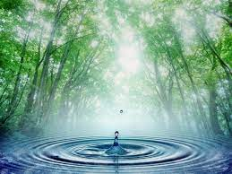

Депрессия.

Когда томится душа, когда нет гармонии внутри себя, страдает тело. И не только. Если по каким-то причинам вдруг перестаешь ощущать внутренний комфорт, то сразу наваливаются неприятности, недомогания и невесть откуда взявшиеся невзгоды.
А все потому, что в этот момент мы смотрим на жизнь через темную призму и перестаем видеть светлое, поскольку все свое внимание фиксируем на негативе. Хотя жизнь сама по себе не утратила своих прелестей. В ней по-прежнему есть место радости и восторгу. Просто мы перестали замечать ее красоту.
Это всё симптомы депрессии. Данное состояние, избавляться от которого врачи рекомендуют дорогостоящими лекарствами, прекрасно преодолевается с помощью воды. Именно она более всего другого способна влиять на расстроенную нервную систему. Патология, ассоциируемая с социальным стрессом – страхом, волнением, неуверенностью, постоянными эмоциональными и семейными проблемами, – это результат дефицита воды в тканях мозга. Мозг работает на электроэнергии, генерируемой жидкостями, главное – водой. В условиях обезвоживания количество энергии уменьшается и многие функции мозга теряют свою эффективность. Издавна врачи при расстройстве нервной системы большое значение придавали достаточному притоку крови и кислорода к мозгу. Именно тогда улучшается настроение. И в этом главный помощник – вода. После нескольких дней выполнения программы оздоровления с помощью воды от депрессии не останется и следа.
Первый постулат методики: питье в течение дня перед едой травяного чая, хотя бы по полстакана. Схема приготовления и подбор соответствующего растения описаны подробно в следующих главах книги.
Второе и основное положение системы – утром натощак выпивать два стакана теплой воды и сразу провести в ванной, душевой или на свежем воздухе частичное обливание при температуре 25–30 °C и ниже продолжительностью до 3 минут. Их рекомендуется применять для любой части тела: ног, колен, поясницы, головы, области позвоночного столба. Главное – чтобы было приятно.
Также при депрессивных состояниях показан прохладный душ с постепенным понижением температуры до 20 °C длительностью до 2–3 минут, на курс следует принять 10 процедур. При сексуальных неврозах рекомендуется температуру понижать до 15 °C.
Комплекс водных процедур при депрессии включает в себя утреннее и вечернее хождение в холодной воде 3–5 минут, прием вечерних расслабляющих ванн. Иногда поднимает настроение и ирландский душ.
Холодный душ оказывает освежающее действие даже при сильной усталости и истощении организма. Однако страдающие ревматизмом, ишиасом или радикулитом должны его избегать. Люди с легко возбудимой нервной системой тоже могут пользоваться душем, но только теплым.
Ирландский душ состоит в том, что сначала пускают воду самой высокой температуры, которую только может выдержать кожа, а заканчивают процедуру коротким холодным душем. Чем больше разница температуры, тем лучше результат. Горячий душ не должен продолжаться больше 1–2 минут, а холодный, завершающий – не свыше 5–10 секунд.
Ежедневное мытье под душем не должно продолжаться дольше 5 мин при умеренной температуре. Душ с водой переменной температуры хорошо действует на обмен веществ. Сначала пускают теплую воду, потом холодную, несколько раз меняют температуру и заканчивают холодной водой. После душа тело хорошо и досуха растирают полотенцем, желательно самым красивым для психологического подъема тонуса.
Подберите для себя самую подходящую водную процедуру, а в течение дня выпивайте не менее 10 стаканов активированной воды и вечером – 2 стакана успокоительного чая с мятой или мелиссой, добавьте кусочек лимона, мед. Постарайтесь исключить пиво, алкоголь, курение, особенно во второй половине дня.
Помните, что депрессия боится физической активности!
Регулярные упражнения повышают самооценку и меняют тонкие химические процессы в мозге в ту же сторону, что и патентованные антидепрессанты. Психологи «прописывают» от депрессии активно использовать физкультуру, танцы, плавание, лыжи, прогулки с собакой.
Следующий постулат схемы лечения депрессии – солнце поднимает настроение!
Нашему организму необходим солнечный свет. Его недостаток может привести к нарушению выработки основных гормонов и подтолкнуть развитие депрессии. Мы – дети Солнца! Если пасмурно, дождь – есть солярий или обычная свето– и цветотерапия.
Нельзя обойти вниманием, что и как мы едим. Оказывается, рыбные дни лечат!
Доказано, что любители рыбных блюд страдают депрессией реже, чем «рыбоненавистники». Содержащиеся в этом продукте полезные жирные кислоты способствуют нормальной функции нейронов (мозговых клеток). Если настроение понижено лишь слегка – съешь рыбку, лучше скумбрию. В тех случаях, когда настроение «на нуле», на помощь придут пищевые добавки с рыбьим жиром, и в больших количествах.
Зверобой убивает «зверя в душе»! Бесспорным лидером естественных средств борьбы с депрессией является зверобой. Чтобы наладить сон и аппетит, поднять уровень энергии, требуется попить чай со зверобоем в течение месяца. Хотя и не так быстро действует по сравнению с таблеткой, но зато без побочных явлений, качественно и надолго.
Замечали ли вы, что во время «мерзопакостного» настроения духи, туалетные воды, эфирные масла уменьшают свой запах? А между тем специально подобранные аромат поднимет настроение.
Если у вас на душе «скребут кошки» – понюхайте любимые цветы. Их также могут заменить эфирные масла. Сделайте ароматокурительницу: зажгите свечку, а сверху капните масло шиповника, мяты, розы. Более того, психологи рекомендуют при депрессии капать по 2 капли ароматного масла 2 раза в день под язык.
И пейте, пейте воду маленькими глотками!